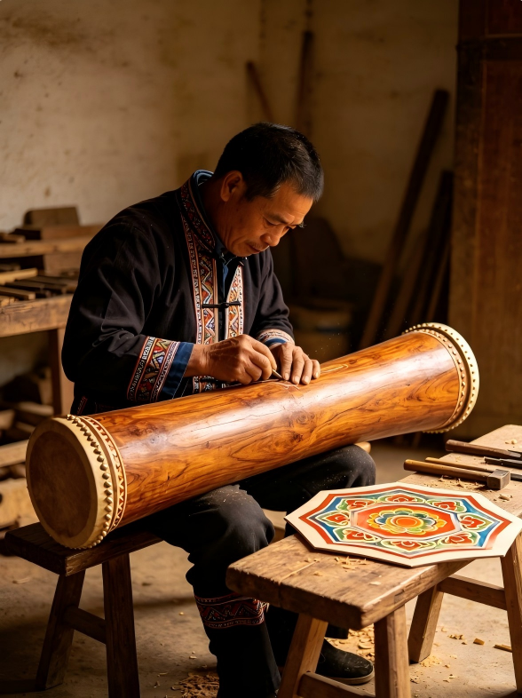
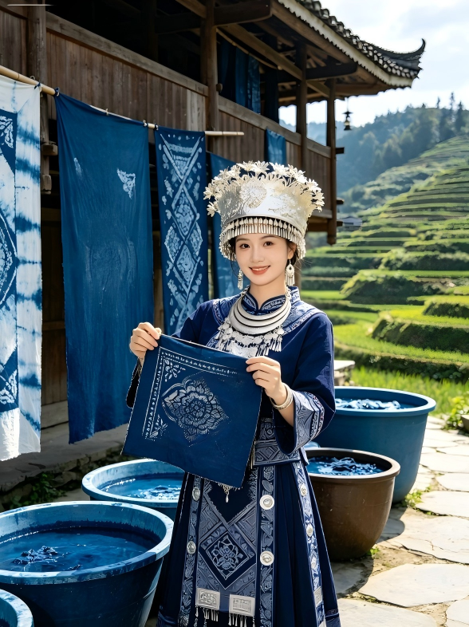
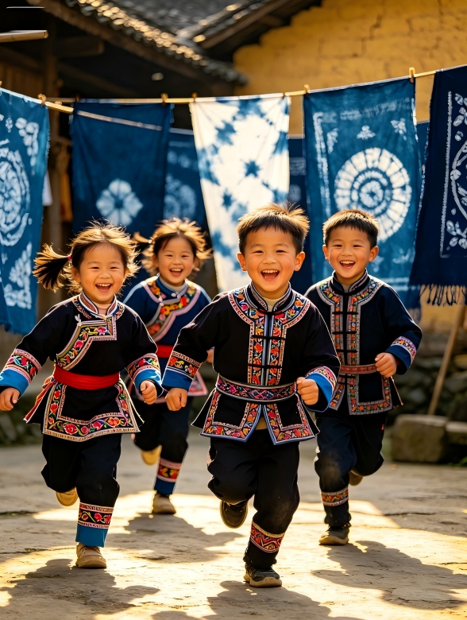
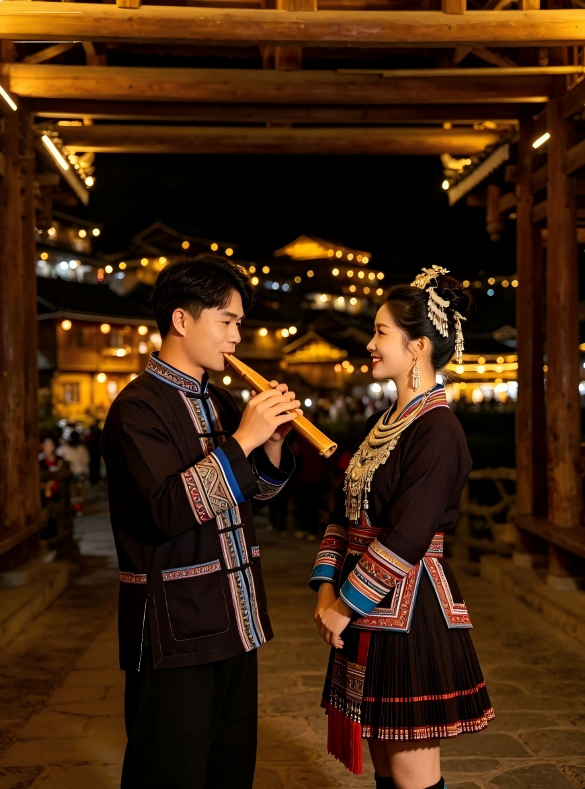

蓝靛瑶是瑶族的重要支系，拥有盘王节、瑶绣、铜鼓舞、蓝靛染布等多项国家级非物质文化遗产

盘王长鼓是瑶族祭祀盘王的核心圣器，为国家级非物质文化遗产。制作工艺复杂，需经过选木、掏空、蒙皮、彩绘、上漆等20多道工序，历时3个月才能完成。
每一面鼓都承载着瑶族的民族信仰与历史记忆，鼓面绘制的八角花纹样象征着太阳与吉祥，鼓身的龙犬纹则是瑶族盘王图腾的体现。

蓝靛染是蓝靛瑶最具代表性的传统工艺，已有上千年历史。用蓝草发酵制成天然染料，经多次浸染、晾晒、漂洗，染出的布匹色泽深沉、经久不褪色。
瑶族妇女从小学习染布技艺，她们用蜡刀在白布上绘制八角花、龙犬纹等传统纹样，再放入染缸浸染，最终制成精美的瑶锦和服饰。

瑶族儿童是民族文化的未来。在传统瑶寨，孩子们从小跟着爷爷奶奶学习瑶语、瑶绣和民族歌舞，在耳濡目染中传承着祖辈留下的文化瑰宝。
每逢盘王节，孩子们会身着盛装，跟着大人一起跳铜鼓舞、唱盘王歌，在欢乐的节日氛围中感受民族文化的魅力。

芦笙是瑶族传统乐器，对歌是瑶族青年表达爱意的重要方式。每逢节日，瑶族青年身着盛装，吹起芦笙，唱起山歌，在歌声中传递情感。
瑶族山歌内容丰富，涵盖历史传说、生产生活、爱情故事等，是瑶族口头文学的重要组成部分，被誉为"瑶族的百科全书"。
长桌宴是瑶族最隆重的待客礼仪，已有上千年历史。数十张桌子拼接成长龙，摆满腊肉、酸鱼、糯米饭、油茶等特色美食。
宾客与主人围坐一堂，举杯畅饮，共话情谊。席间还会有瑶族姑娘敬酒、唱山歌，气氛热烈，体现了瑶族人民热情好客的民族性格。
了解更多瑶族美食他们用一生坚守，守护着即将消失的民族文化
"我做鼓做了40年，从16岁跟着父亲学做鼓。以前瑶寨里家家户户都会做鼓，现在年轻人都出去打工了，没人愿意学这门手艺了。"
"盘王鼓是我们瑶族的根，没有鼓就没有盘王节，没有盘王节就没有我们瑶族。我希望能有更多年轻人来学做鼓，把这门手艺传下去。"
"看到你们做的这个游戏，能让孩子们在玩游戏的时候了解盘王鼓，我真的很高兴。谢谢你们，让我们的文化有了新的希望。"
瑶寨小学 语文老师
"以前孩子们上瑶语课都很枯燥，现在用这个游戏，孩子们下课都在玩，会说的瑶语越来越多了。真的非常感谢你们，为我们瑶寨的孩子做了这么好的东西。"
瑶族小学 四年级学生
"这个游戏太好玩了！我最喜欢第三关的对战模式，现在我已经能说很多瑶语了，爷爷奶奶都夸我厉害。我还要继续玩，解锁更多的文化卡片！"
瑶族村民
"我家孙子以前只会说普通话，现在跟着这个游戏学瑶语，还会跟我讲盘王的故事。看到孩子们重新喜欢上自己的民族文化，我真的很开心。"